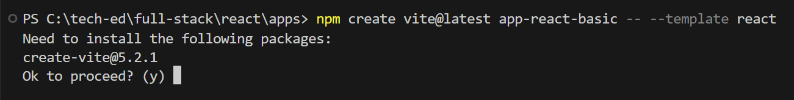
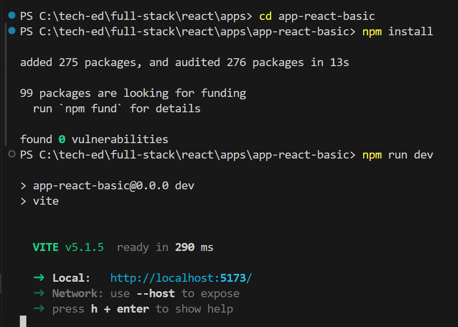
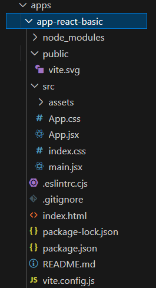
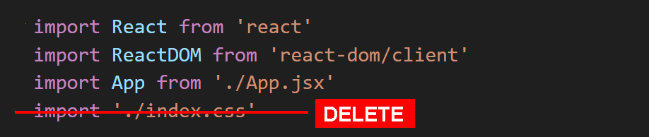
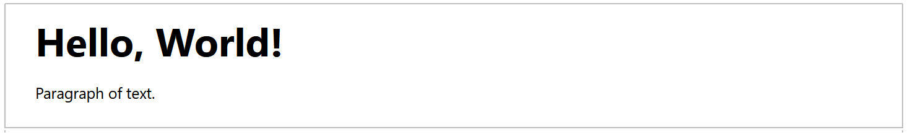
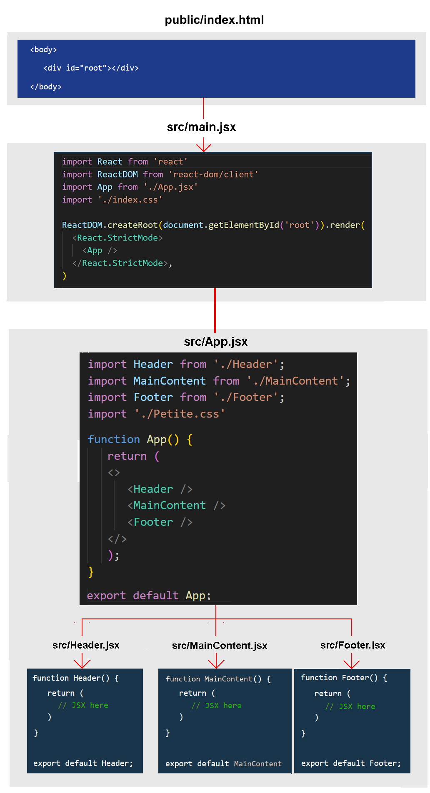
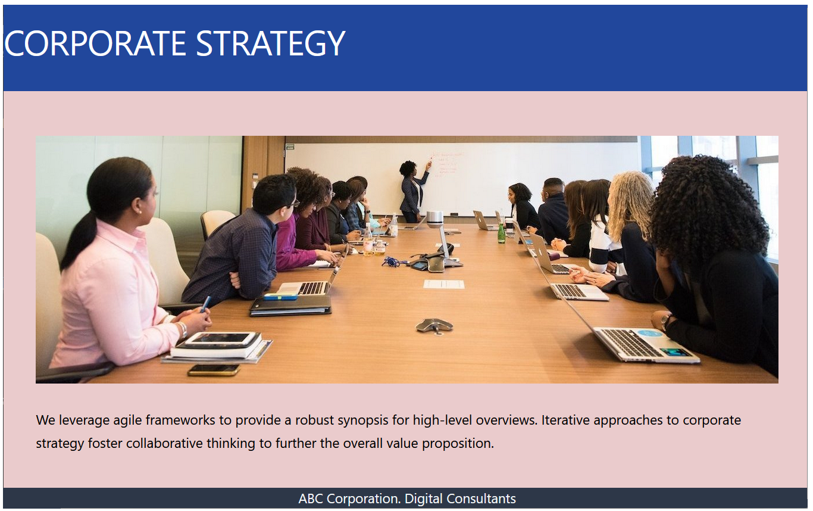

Learning Goals
At the end of this Tutorial, you will be able to:
- Scaffold a ReactJS app with Vite and be familiar with its folder and file structure.
- Customise the template files according to your requirements.
- Build a basic app with functional components, and imported CSS and image files.
About Vite
Vite is a modern build tool that provides a streamlined workflow for building web applications, especially those using React. It has replaced the older utility called create-react-app.
Here are the main features of Vite:
- Fast development server: Leverages native ES modules and avoids bundling during development, leading to rapid startup and hot module replacement (HMR) for quicker feedback.
- Efficient build process: Uses Rollup for production builds, creating highly optimized static assets for deployment.
- Out-of-the-box React support: Offers built-in support for React and JSX, including automatic JSX transformation.
- Simple configuration: Provides a minimal and intuitive configuration, requiring minimal setup for most projects.
Scaffolding your first app with Vite
Follow these steps to build a basic ReactJS app with Vite:
- In a Command Prompt window or inside a VS Code Terminal, navigate to where you want Vite to create a folder for your app. For example:
C:\> users\react\apps
- Type the following command that includes the name you want to call your new app. In this example, the app is called app-react-basic.
npm create vite@latest app-react-basic -- --template react
- If you do not already have Vite installed, you will be prompted to install it. 
- When Vite completes the build process, you will see the message below.

- Follow these instructions to continue building your app, and then running it. 
When you launch your new app in a browser, it should look as shown below.

ReactJS folders and files
Vite will create the following hierarchy of folders and files.
The more important items are as listed below.
index.html |
The web page that is served when your app is run. It has a <div id="root"></div> container into which main.jsx injects the top-level or 'parent' <App /> component. |
The /src folder
This contains your app's components. All of the code you write will be located here.
main.jsx |
The main JavaScript file where your React app is initialized. |
App.jsx |
The root React component. |
vite.config.js |
The configuration file for Vite. |
Your App.jsx file may contain all the code for your ReactJS app. But more commonly, it acts as a 'parent' component that imports other, single-purpose 'child' components.
As a test, add some new text to App.jsx, save the file, and verify that your app updates live in your web browser.

Customising your app
Next, you will customise the 'boilerplate' content provided by Vite to build a very basic React app.
- Download the following stylesheet and save it to your app's /src folder. Petite.css
- Open the index.html file in your main app folder and replace the <title> tag as shown below.

- In your /src folder, open the main.jsx file and update it as follows. 
- Also in your /src folder, open the App.jsx and replace all its content with the content below.
import './Petite.css' function App() { return ( <> <h1>Hello, World!</h1> <p>Paragraph of text.</p> </> ); } export default App;
Your web page should now look as shown below.
In this basic app, you have added code directly to the App.jsx file.
Adding child components
Next, you will add three components to your app. When finished, your App.jsx file will be the parent component and three others will all be child components.
- In the /src folder, create a Header.jsx file with the following content.
function Header() { return ( <header><h1>Corporate strategy</h1></header> ) } export default Header; - Also in the /src folder, create a MainContent.jsx file with the following content.
function MainContent() { return ( <main><section><p>We leverage agile frameworks to provide a robust synopsis for high-level overviews. Iterative approaches to corporate strategy foster collaborative thinking to further the overall value proposition.</p></section></main> ) } export default MainContent; - And finally in the /src folder, create a Footer.jsx file with the following content.
function Footer() { return ( <footer><p>ABC Corporation. Digital Consultants</p></footer> ) } export default Footer; - Now, update your App.jsx file so that it acts as the parent to your three new components. See below.
import Header from './Header'; import MainContent from './MainContent'; import Footer from './Footer'; import './Petite.css' function App() { return ( <> <Header /> <MainContent /> <Footer /> </> ); } export default App;
Your web page should now look similar to the following.

The parent-child relationships between the various files in your ReactJS app are illustrated below.
About CSS files
In non-ReactJS websites, you would typically add a CSS file by including a link to it in the <head>. For example.

For a ReactJS app, however it is better to place your CSS file(s) and any images in your /src folder (or a sub-folder of it) and import them with JavaScript.
Adding an image file
As with CSS files, it is best to add them from the /src folder with import statements.
The only exceptions might be for generic site-wide images which would be tedious to manually import multiple times into different component files. Or when the React app is only part of a larger website.
You can import an image into your sample app as follows.
- Download the following file to your /src folder. corporate.jpg
- In your MainContent.jsx child component, add the following import statement at the top of the file.
import corporateImg from './corporate.jpg'; - Now you can reference the image by its variable name. See below.
function MainContent() { return ( <main> <section> <img src={corporateImg} alt="Corporate" /> <p>We leverage agile frameworks to provide a robust synopsis for high-level overviews. Iterative approaches to corporate strategy foster collaborative thinking to further the overall value proposition.</p> </section> </main> ) } export default MainContent;
Your web page should now look as shown below.
